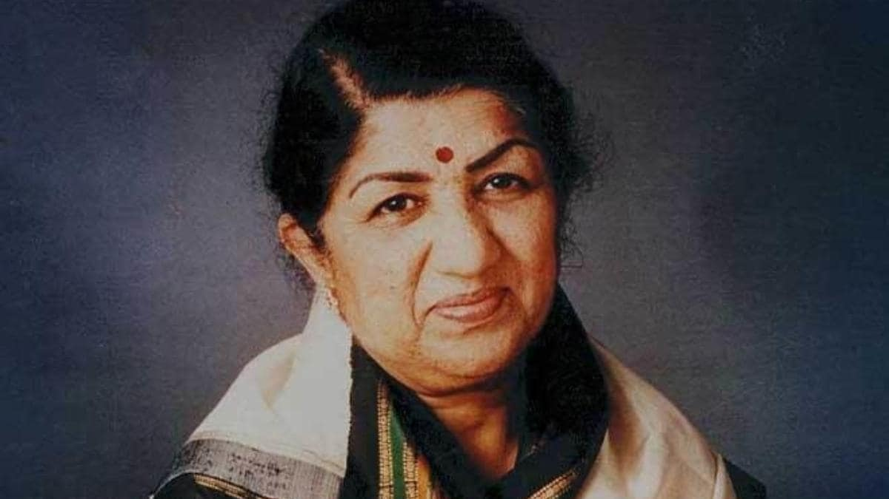

Lata Mangeshkar Ji
playback singer and occasional music composer.

Lata Mangeshkar Ji (1929-2022)
28 September 1929 – 6 February 2022
A Short Biography of Lata Mangeshkar Ji
- Mangeshkar was born in a Maharashtrian Brahmin family in 1929
- She was the eldest child in the family. Meena, Asha, Usha, and Hridaynath, in birth order, are her siblings; all are accomplished singers and musicians
- She received her first music lesson from her father. At the age of five, she started to work as an actress in her father's musical plays (Sangeet Natak in Marathi).
- She sang the song "Naachu Yaa Gade, Khelu Saari Mani Haus Bhaari", which was composed by Sadashivrao Nevrekar for Vasant Joglekar's Marathi movie Kiti Hasaal (1942),
- In the 1950s, Mangeshkar sang songs composed by various music directors
- She sang many raga-based songs for Naushad in movies
- Mangeshkar's song "Pyar Kiya To Darna Kya" from Mughal-e-Azam (1960), composed by Naushad and lip-synced by Madhubala
- Mangeshkar has sung 185 songs in Bengali
- Lata Mangeshkar composed music for the first time in 1955 for the Marathi movie Ram Ram Pavhane
- She won Maharashtra State Government's Best Music Director Award for the film Sadhi Manase. The song "Airanichya Deva Tula" from the same film received best song award
- On 8 January 2022, Lata Mangeshkar tested positive for COVID-19 with mild symptoms and was admitted to Breach Candy Hospital's intensive care unit in Mumbai.
- Mangeshkar died from multiple organ dysfunction syndrome on 6 February 2022, at the age of 92.
I believe in one power, and that is the hand of God. I respect all religions.
--Lata Mangeshkar--
If you have time, you should read more about this incredibles human being on her wikipedia entry